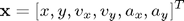
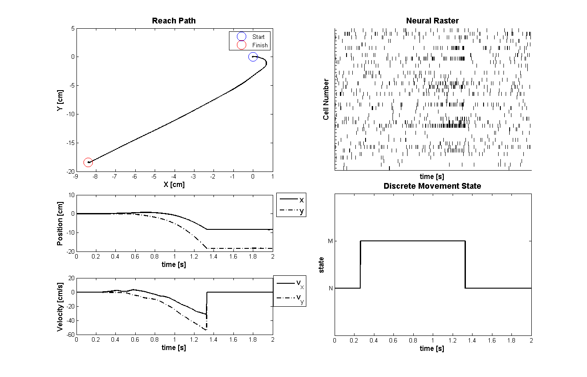
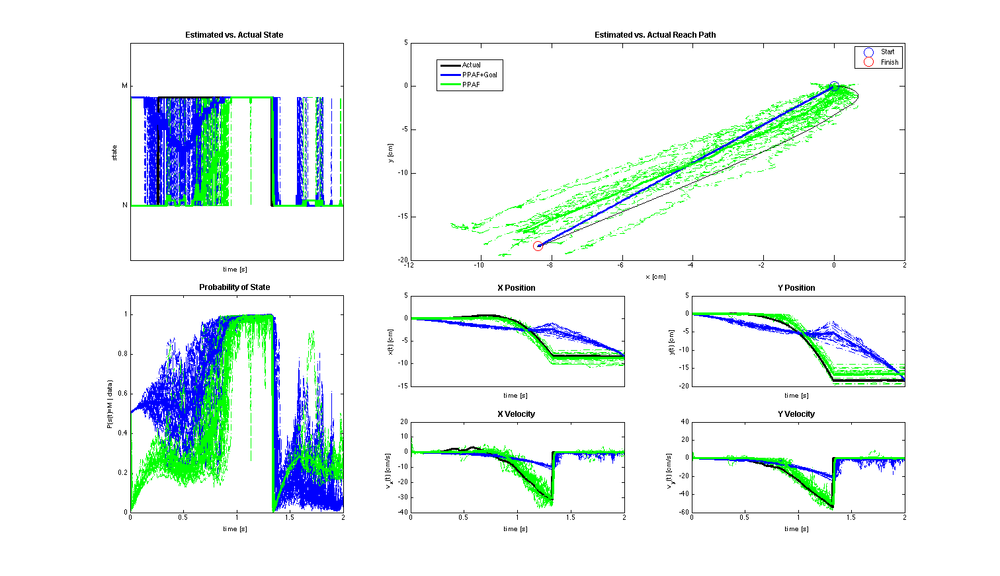

Hybrid Point Process Filter Example
This example is based on an implementation of the Hybrid Point Process filter described in General-purpose filter design for neural prosthetic devices by Srinivasan L, Eden UT, Mitter SK, Brown EN in J Neurophysiol. 2007 Oct, 98(4):2456-75.
Contents
Problem Statement
Suppose that a process of interest can be modeled as consisting of several discrete states where the evolution of the system under each state can be modeled as a linear state space model. The observations of both the state and the continuous dynamics are not direct, but rather observed through how the continuous and discrete states affect the firing of a population of neurons. The goal of the hybrid filter is to estimate both the continuous dynamics and the underlying system state from only the neural population firing (point process observations).
To illustrate the use of this filter, we consider a reaching task. We assume two underlying system states s=1="Not Moving"=NM and s=2="Moving"=M. Under the "Not Moving" the position of the arm remain constant, whereas in the "Moving" state, the position and velocities evolved based on the arm acceleration that is modeled as a gaussian white noise process.
Under both the "Moving" and "Not Moving" states, the arm evolution state vector is

Generated Simulated Arm Reach
clear all; close all; delta=0.001; Tmax=2; time=0:delta:Tmax; A{2} = [1 0 delta 0 delta^2/2 0; 0 1 0 delta 0 delta^2/2; 0 0 1 0 delta 0; 0 0 0 1 0 delta; 0 0 0 0 1 0; 0 0 0 0 0 1]; A{1} = [1 0 0 0 0 0; 0 1 0 0 0 0; 0 0 0 0 0 0; 0 0 0 0 0 0; 0 0 0 0 0 0; 0 0 0 0 0 0]; A{1} = [1 0; 0 1]; Px0{2} =1e-6*eye(6,6); Px0{1} =1e-6*eye(2,2); minCovVal = 1e-12; covVal = 1e-3; Q{2}=[minCovVal 0 0 0 0 0; 0 minCovVal 0 0 0 0; 0 0 minCovVal 0 0 0; 0 0 0 minCovVal 0 0; 0 0 0 0 covVal 0; 0 0 0 0 0 covVal]; Q{1}=minCovVal*eye(2,2); mstate = zeros(1,length(time)); ind{1}=1:2; ind{2}=1:6; % Acceleration model X=zeros(max([size(A{1},1),size(A{2},1)]),length(time)); p_ij = [.998 .002; .001 .999]; for i = 1:length(time) if(i==1) mstate(i) = 1; else if(rand(1,1)<p_ij(mstate(i-1),mstate(i-1))) mstate(i) = mstate(i-1); else if(mstate(i-1)==1) mstate(i) = 2; else mstate(i) = 1; end end end st = mstate(i); R=chol(Q{st}); if(i<length(time)) X(ind{st},i+1) = A{st}*X(ind{st},i) + R*randn(length(ind{st}),1); end end
%save paperHybridFilterExample time Tmax delta mstate X p_ij ind A Q Px0 load paperHybridFilterExample; Q{1}=minCovVal*eye(2,2); numCells=40; close all; scrsz = get(0,'ScreenSize'); fig1=figure('OuterPosition',[scrsz(3)*.1 scrsz(4)*.1 ... scrsz(3)*.8 scrsz(4)*.9]); subplot(4,2,[1 3]); plot(100*X(1,:),100*X(2,:),'k','Linewidth',2); hx=xlabel('X [cm]'); hy=ylabel('Y [cm]'); hold on; set([hx, hy],'FontName', 'Arial','FontSize',12,'FontWeight','bold'); title('Reach Path','FontWeight','bold','Fontsize',14,'FontName','Arial'); hold on; h1=plot(100*X(1,1),100*X(2,1),'bo','MarkerSize',16); h2=plot(100*X(1,end),100*X(2,end),'ro','MarkerSize',16); legend([h1 h2],'Start','Finish','Location','NorthEast'); subplot(4,2,[6 8]); plot(time,mstate,'k','Linewidth',2); axis tight; v=axis; axis([v(1) v(2) 0 3]); hx=xlabel('time [s]'); hy=ylabel('state'); set([hx, hy],'FontName', 'Arial','FontSize',12,'FontWeight','bold'); set(gca,'YTick',[1 2],'YTickLabel',{'N','M'}) title('Discrete Movement State','FontWeight','bold','Fontsize',14,... 'FontName','Arial'); subplot(4,2,5); h1=plot(time,100*X(1,1:end),'k','Linewidth',2); hold on; h2=plot(time,100*X(2,1:end),'k-.','Linewidth',2); hx=xlabel('time [s]'); hy=ylabel('Position [cm]'); set([hx, hy],'FontName', 'Arial','FontSize',12,'FontWeight','bold'); h_legend=legend([h1,h2],'x','y','Location','NorthEast'); set(h_legend,'FontSize',14) pos = get(h_legend,'position'); set(h_legend, 'position',[pos(1)+.06 pos(2)+.01 pos(3:4)]); subplot(4,2,7); h1=plot(time,100*X(3,1:end),'k','Linewidth',2); hold on; h2=plot(time,100*X(4,1:end),'k-.','Linewidth',2); hx=xlabel('time [s]'); hy=ylabel('Velocity [cm/s]'); set([hx, hy],'FontName', 'Arial','FontSize',12,'FontWeight','bold'); h_legend=legend([h1,h2],'v_{x}','v_{y}','Location','NorthEast'); set(h_legend,'FontSize',14) pos = get(h_legend,'position'); set(h_legend, 'position',[pos(1)+.06 pos(2)+.01 pos(3:4)]); meanMu = log(10*delta); % baseline firing rate MuCoeffs = meanMu+randn(numCells,1); % mu_i ~ G(meanMu,1) coeffs = [MuCoeffs 0*randn(numCells,2) 10*(rand(numCells,2)-.5) ... 0*randn(numCells,2)]; %Add realization by thinning with history dataMat = [ones(size(X,2),1),X(:,1:end)']; % Generate M1 cells clear lambda tempSpikeColl lambdaCIF n; fitType ='binomial'; % matlabpool open; for i=1:numCells tempData = exp(dataMat*coeffs(i,:)'); if(strcmp(fitType,'binomial')); lambdaData = tempData./(1+tempData); else lambdaData = tempData; end lambda{i}=Covariate(time,lambdaData./delta, ... '\Lambda(t)','time','s','spikes/sec',... {strcat('\lambda_{',num2str(i),'}')},{{' ''b'', ''LineWidth'' ,2'}}); maxTimeRes = 0.001; tempSpikeColl{i} = CIF.simulateCIFByThinningFromLambda(lambda{i},1,[]); n{i} = tempSpikeColl{i}.getNST(1); n{i}.setName(num2str(i)); end spikeColl = nstColl(n); subplot(4,2,[2 4]); spikeColl.plot; set(gca,'xtick',[],'xtickLabel',[],'ytickLabel',[]); title('Neural Raster','FontWeight','bold','Fontsize',14,'FontName','Arial'); hx=xlabel('time [s]','Interpreter','none'); hy=ylabel('Cell Number','Interpreter','none'); set([hx, hy],'FontName', 'Arial','FontSize',12,'FontWeight','bold'); % close all;
Simulate Neural Firing
We simulate a population of neurons that fire in response to the movement velocity (x and y coorinates)
%Use the data to estimate the process noise for the moving case and %non-moving case nonMovingInd = intersect(find(X(5,:)==0),find(X(6,:)==0)); movingInd=setdiff(1:size(X,2),nonMovingInd); Q{2}=diag(var(diff(X(:,movingInd),[],2),[],2)); Q{2}(1:4,1:4)=0; varNV=diag(var(diff(X(:,nonMovingInd),[],2),[],2)); Q{1} = varNV(1:2,1:2); close all; clear S_est X_est MU_est S_estNT X_estNT MU_estNT; numExamples = 20; numCells=40; scrsz = get(0,'ScreenSize'); fig1=figure('OuterPosition',[scrsz(3)*.1 scrsz(4)*.1 ... scrsz(3)*.9 scrsz(4)*.9]); for n=1:numExamples meanMu = log(10*delta); % baseline firing rate MuCoeffs = meanMu+randn(numCells,1); % mu_i ~ G(meanMu,1) coeffs = [MuCoeffs 0*randn(numCells,2) 10*(rand(numCells,2)-.5) ... 0*randn(numCells,2)]; %Add realization by thinning with history dataMat = [ones(size(X,2),1),X(:,1:end)']; % Generate M1 cells clear lambda tempSpikeColl lambdaCIF nst; fitType ='binomial'; % matlabpool open; for i=1:numCells tempData = exp(dataMat*coeffs(i,:)'); if(strcmp(fitType,'binomial')); lambdaData = tempData./(1+tempData); else lambdaData = tempData; end lambda{i}=Covariate(time,lambdaData./delta, ... '\Lambda(t)','time','s','spikes/sec',... {strcat('\lambda_{',num2str(i),'}')},{{' ''b'', ''LineWidth'' ,2'}}); maxTimeRes = 0.001; tempSpikeColl{i} = ... CIF.simulateCIFByThinningFromLambda(lambda{i},1,[]); nst{i} = tempSpikeColl{i}.getNST(1); nst{i}.setName(num2str(i)); end % Decode the x-y trajectory % Enforce that the maximum time resolution is delta spikeColl = nstColl(nst); spikeColl.resample(1/delta); dN = spikeColl.dataToMatrix; dN(dN>1)=1; %Avoid more than 1 spike per bin. % Starting states are equally probable Mu0=.5*ones(size(p_ij,1),1); clear x0 yT clear Pi0 PiT; x0{1} = X(ind{1},1); yT{1} = X(ind{1},end); Pi0 = Px0; PiT{1} = 1e-9*eye(size(x0{1},1),size(x0{1},1)); x0{2} = X(ind{2},1); yT{2} = X(ind{2},end); PiT{2} = 1e-9*eye(size(x0{2},1),size(x0{2},1)); % Run the Hybrid Point Process Filter [S_est, X_est, W_est, MU_est, X_s, W_s,pNGivenS]=... DecodingAlgorithms.PPHybridFilterLinear(A, Q, p_ij,Mu0, dN',... coeffs(:,1),coeffs(:,2:end)',fitType,delta,[],[],x0,Pi0, yT,PiT); [S_estNT, X_estNT, W_estNT, MU_estNT, X_sNT, W_sNT,pNGivenSNT]=... DecodingAlgorithms.PPHybridFilterLinear(A, Q, p_ij,Mu0, dN',... coeffs(:,1),coeffs(:,2:end)',fitType,delta,[],[],x0); %Store the results for computing relevant statistics later X_estAll(:,:,n) = X_est; X_estNTAll(:,:,n) = X_estNT; S_estAll(n,:)=S_est; S_estNTAll(n,:)=S_estNT; MU_estAll(:,:,n)=MU_est; MU_estNTAll(:,:,n) = MU_estNT; %State Estimate subplot(4,3,[1 4]); plot(time,mstate,'k','LineWidth',3); hold all; plot(time,S_est,'b-.','Linewidth',.5); plot(time,S_estNT,'g-.','Linewidth',.5); axis tight; v=axis; axis([v(1) v(2) 0.5 2.5]); %Movement State Probability (Non-movement State probability is 1-Pr(Movement)) subplot(4,3,[7 10]); plot(time,MU_est(2,:),'b-.','Linewidth',.5); hold on; plot(time,MU_estNT(2,:),'g-.','Linewidth',.5); hold on; axis([min(time) max(time) 0 1.1]); %The movement path subplot(4,3,[2 3 5 6]); h1=plot(100*X(1,:)',100*X(2,:)','k'); hold all; h2=plot(100*X_est(1,:)',100*X_est(2,:)','b-.'); hold all; h3=plot(100*X_estNT(1,:)',100*X_estNT(2,:)','g-.'); %X-Position subplot(4,3,8); h1=plot(time,100*X(1,:),'k','LineWidth',3); hold on; h2=plot(time,100*X_est(1,:)','b-.'); h3=plot(time,100*X_estNT(1,:)','g-.'); %Y-Position subplot(4,3,9); h1=plot(time,100*X(2,:),'k','LineWidth',3); hold on; h2=plot(time,100*X_est(2,:)','b-.'); h3=plot(time,100*X_estNT(2,:)','g-.'); %X-Velocity subplot(4,3,11); h1=plot(time,100*X(3,:),'k','LineWidth',3); hold on; h2=plot(time,100*X_est(3,:)','b-.'); h3=plot(time,100*X_estNT(3,:)','g-.'); subplot(4,3,12); h1=plot(time,100*X(4,:),'k','LineWidth',3); hold on; h2=plot(time,100*X_est(4,:)','b-.'); h3=plot(time,100*X_estNT(4,:)','g-.'); end % % Save all the example Data % save Experiment6ReachExamples X_estAll X_estNTAll S_estAll ... % S_estNTAll MU_estAll MU_estNTAll; % % load Experiment6ReachExamples; % Mean Discrete State Estimate subplot(4,3,[1 4]); hold all; plot(time,mstate,'k','LineWidth',3); plot(time,mean(S_estAll),'b','LineWidth',3); plot(time,mean(S_estNTAll),'g','LineWidth',3); set(gca,'xtick',[],'YTick',[1 2.1],'YTickLabel',{'N','M'}); hy=ylabel('state'); hx=xlabel('time [s]'); set([hy hx],'FontName', 'Arial','FontSize',10,'FontWeight','bold',... 'Interpreter','none'); title('Estimated vs. Actual State','FontWeight','bold','Fontsize',... 12,'FontName','Arial'); % Mean State Movement State Probability subplot(4,3,[7 10]); plot(time, mean(squeeze(MU_estAll(2,:,:)),2),'b','LineWidth',3); hold on; plot(time,mean(squeeze(MU_estNTAll(2,:,:)),2),'g','LineWidth',3); hold on; axis([min(time) max(time) 0 1.1]); hx=xlabel('time [s]'); hy=ylabel('P(s(t)=M | data)'); set([hx, hy],'FontName', 'Arial','FontSize',10,'FontWeight','bold'); title('Probability of State','FontWeight','bold','Fontsize',12,... 'FontName','Arial'); % Mean movement path subplot(4,3,[2 3 5 6]); h1=plot(100*X(1,:)',100*X(2,:)','k'); hold all; mXestAll=mean(100*X_estAll,3); mXestNTAll=mean(100*X_estNTAll,3); plot(mXestAll(1,:),mXestAll(2,:),'b','Linewidth',3); plot(mXestNTAll(1,:),mXestNTAll(2,:),'g','Linewidth',3); hx=xlabel('x [cm]'); hy=ylabel('y [cm]'); set([hx, hy],'FontName', 'Arial','FontSize',10,'FontWeight','bold'); h1=plot(100*X(1,1),100*X(2,1),'bo','MarkerSize',14); hold on; h2=plot(100*X(1,end),100*X(2,end),'ro','MarkerSize',14); legend([h1 h2],'Start','Finish','Location','NorthEast'); title('Estimated vs. Actual Reach Path','FontWeight','bold',... 'Fontsize',12,'FontName','Arial'); % Mean X-Positon subplot(4,3,8); h1=plot(time,100*X(1,:),'k','LineWidth',3); hold on; h2=plot(time,mXestAll(1,:),'b','LineWidth',3); hold on; h3=plot(time,mXestNTAll(1,:),'g','LineWidth',3); hold on; hy=ylabel('x(t) [cm]'); hx=xlabel('time [s]'); set(gca,'xtick',[],'xtickLabel',[]); set([hx, hy],'FontName', 'Arial','FontSize',10,'FontWeight','bold'); title('X Position','FontWeight','bold','Fontsize',12,'FontName','Arial'); % Mean Y-Position subplot(4,3,9); h1=plot(time,100*X(2,:),'k','LineWidth',3); hold on; h2=plot(time,mXestAll(2,:),'b','LineWidth',3); hold on; h3=plot(time,mXestNTAll(2,:),'g','LineWidth',3); hold on; h_legend=legend([h1(1) h2(1) h3(1)],'Actual','PPAF+Goal',... 'PPAF','Location','SouthEast'); hy=ylabel('y(t) [cm]'); hx=xlabel('time [s]'); set(gca,'xtick',[],'xtickLabel',[]); set([hx, hy],'FontName', 'Arial','FontSize',10,'FontWeight','bold'); title('Y Position','FontWeight','bold','Fontsize',12,'FontName','Arial'); set(h_legend,'FontSize',10) pos = get(h_legend,'position'); set(h_legend, 'position',[pos(1)-.40 pos(2)+.51 pos(3:4)]); % Mean X-Velocity subplot(4,3,11); h1=plot(time,100*X(3,:),'k','LineWidth',3); hold on; h2=plot(time,mXestAll(3,:),'b','LineWidth',3); hold on; h3=plot(time,mXestNTAll(3,:),'g','LineWidth',3); hold on; hy=ylabel('v_{x}(t) [cm/s]'); hx=xlabel('time [s]'); set([hx, hy],'FontName', 'Arial','FontSize',10,'FontWeight','bold'); title('X Velocity','FontWeight','bold','Fontsize',12,'FontName','Arial'); % Mean Y-Velocity subplot(4,3,12); h1=plot(time,100*X(4,:),'k','LineWidth',3); hold on; h2=plot(time,mXestAll(4,:),'b','LineWidth',3); hold on; h3=plot(time,mXestNTAll(4,:),'g','LineWidth',3); hold on; hy=ylabel('v_{y}(t) [cm/s]'); hx=xlabel('time [s]'); set([hx, hy],'FontName', 'Arial','FontSize',10,'FontWeight','bold'); title('Y Velocity','FontWeight','bold','Fontsize',12,'FontName','Arial');